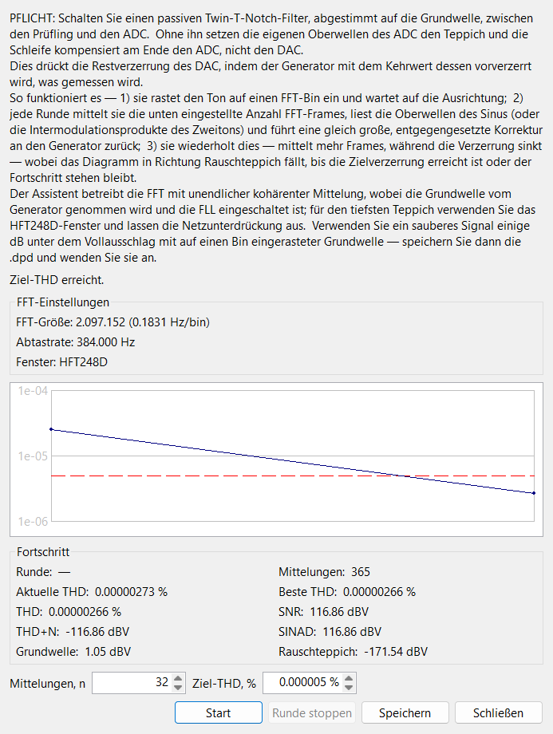

Diese Seite beschreibt die Steuerelemente des Assistenten. Warum er so arbeitet, wie er arbeitet - das zwingend nötige Doppel-T-Kerbfilter, warum die Grundwelle vom Generator genommen wird, wie tiefe kohärente Mittelung die Oberwellen herausgräbt und wie die Korrekturschleife konvergiert - steht im Funktionsprinzip ▸ DAC-Vorverzerrung.
Der Assistent drückt die eigene Oberwellenverzerrung des DAC, sodass
das Stimulus-Signal sauberer ist, als es der Wandler von sich aus erzeugen
kann - was der FFT-Analysator dann zeigt, ist die
Verzerrung des Prüflings, nicht die der Quelle. Er misst die Oberwellen des
DAC hinter einem Kerbfilter und führt eine gleich große, entgegengesetzte
Korrektur an den laufenden Generator zurück - rundenweise wiederholt, bis die
Verzerrung Ihr Ziel erreicht oder sich nicht mehr verbessert. Das Ergebnis
wird als .dpd-Datei gespeichert und auf die
kompensierten
Signalformen des Generators angewendet.

Öffnen Sie ihn über die Assistenten-Schaltfläche (Zauberstab-Symbol) in der Werkzeugleiste des FFT-Bereichs (links neben der Aufnahme-Schaltfläche, nur im Live-Bereich). Vor dem Start muss der Generator bereits ein Sinus-, kompensiertes Sinus- oder Zweiton-Signal abspielen - die Schleife löscht die Oberwellen eines Einzeltons oder die Intermodulationsprodukte eines Zweiton-Signals; jede andere Signalform wird abgewiesen. Der Assistent betreibt die FFT mit unbegrenzter kohärenter Mittelung, wobei die Grundwelle vom Generator genommen wird und die FLL eingeschaltet ist; für das tiefste Grundrauschen verwenden Sie das HFT248D-Fenster und lassen die Netzunterdrückung aus, und treiben einen sauberen Ton einige dB unter dem Vollausschlag mit auf einen Bin eingerasteter Grundwelle.
| Steuerelement | Funktion |
|---|---|
| Mittelungen, n | FFT-Mittelungen pro Runde (Minimum 10). Jede Runde mittelt diese Anzahl Frames und lässt die Zahl dann proportional dazu wachsen, wie weit die Verzerrung bereits gefallen ist - späte Runden mitteln also weit tiefer als frühe. Das Mausrad schrittet um 10, die Pfeile um 1. |
| Ziel-THD, % | Stoppen, sobald die Verzerrung diesen Wert erreicht; 0 läuft, bis sie stehen bleibt. Akzeptiert einen Sub-ppm-Wert (acht Nachkommastellen) und wird als rote gestrichelte Linie im Konvergenz-Diagramm gezeichnet, damit Sie das Ziel sehen. |
| Start / Stopp | Start beginnt die geschlossene Schleife und wird während des Laufs zu Stopp. Die Schleife stoppt auch selbst, wenn sie das Ziel erreicht oder stehen bleibt. |
| Runde stoppen | Die aktuelle Mittelungsrunde jetzt beenden - die bisher gemessene Korrektur anwenden und zur nächsten Runde übergehen. Verwenden Sie dies, wenn sich das Spektrum nicht mehr verbessert und Sie die verbleibenden Mittelungen nicht abwarten möchten. Nur aktiv, während eine Runde mittelt. |
| Speichern | Das beste Ergebnis in eine .dpd-Datei schreiben
(aktiviert, sobald eine Runde abgeschlossen ist). Der vorgeschlagene
Name kodiert die Tonfrequenz, FFT-Größe, Überlappung, das Fenster und
die erreichte Verzerrung in ppm. |
| Anwenden | Speichern wird zu Anwenden, sobald eine Datei geschrieben ist.
Anwenden lädt diese .dpd auf den laufenden Generator und
schaltet ihn ohne Neustart auf die kompensierte Form
(kompensierter Sinus / Zweiton) um und schließt dann den
Assistenten. |
| Schließen | Die Schleife stoppen, den Generator auf den einfachen Ton zurücksetzen (sofern Sie keine Datei angewendet haben) und die FFT-Statistik zurücksetzen. |
Ein Block FFT-Einstellungen gibt Größe, Abtastrate und Fenster wieder, die der Lauf aus dem FFT-Bereich übernimmt (schreibgeschützt - stellen Sie sie dort vorab ein). Eine Statuszeile meldet die laufende Phase: den Ton auf seinen FFT-Bin ausrichten, Rundennummer und verbleibende Mittelungen, die Korrektur anwenden oder danach einschwingen.
Das Konvergenz-Diagramm trägt die Verzerrung jeder abgeschlossenen Runde auf einer logarithmischen Achse auf, wobei die Marker entlang der Waagerechten proportional dazu abgesetzt sind, wie tief diese Runde gemittelt hat - eine lange, tiefe späte Runde nimmt also mehr von der Kurve ein als eine schnelle frühe - und fällt zur roten Ziellinie hin.
Ein Block Fortschritt listet die Live-Werte auf. Für einen Einzelton sind das Rundennummer, die aktuelle und die letzte Runden-THD, die bisher beste THD, die laufende Mittelungszahl sowie THD+N, SNR, SINAD, Grundwelle und Grundrauschen (dBV). Bei einem Zweiton-Signal minimiert die Schleife die Intermodulation, sodass die THD-Werte durch IMD, beste IMD und D+N ersetzt werden.